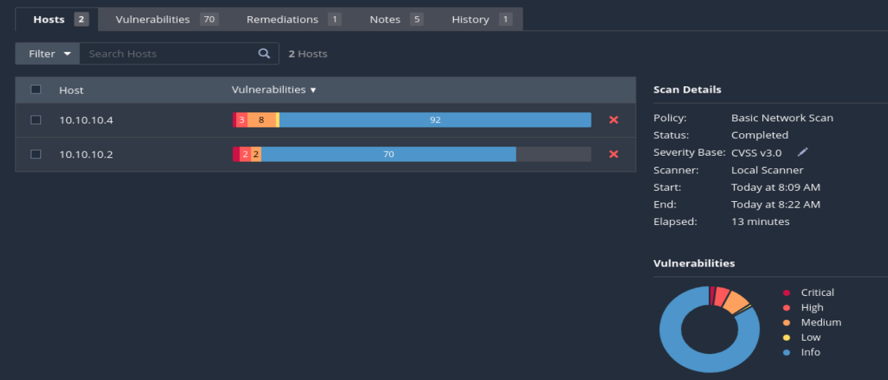

Win19 scan:
port scan :

many vulnerabilites have been detected.
we notice different severity in the vulnerabilities ,one being critical :
Win16 scan:
one vulnerability that is extremly dangerous is :
many CVEs have been found :